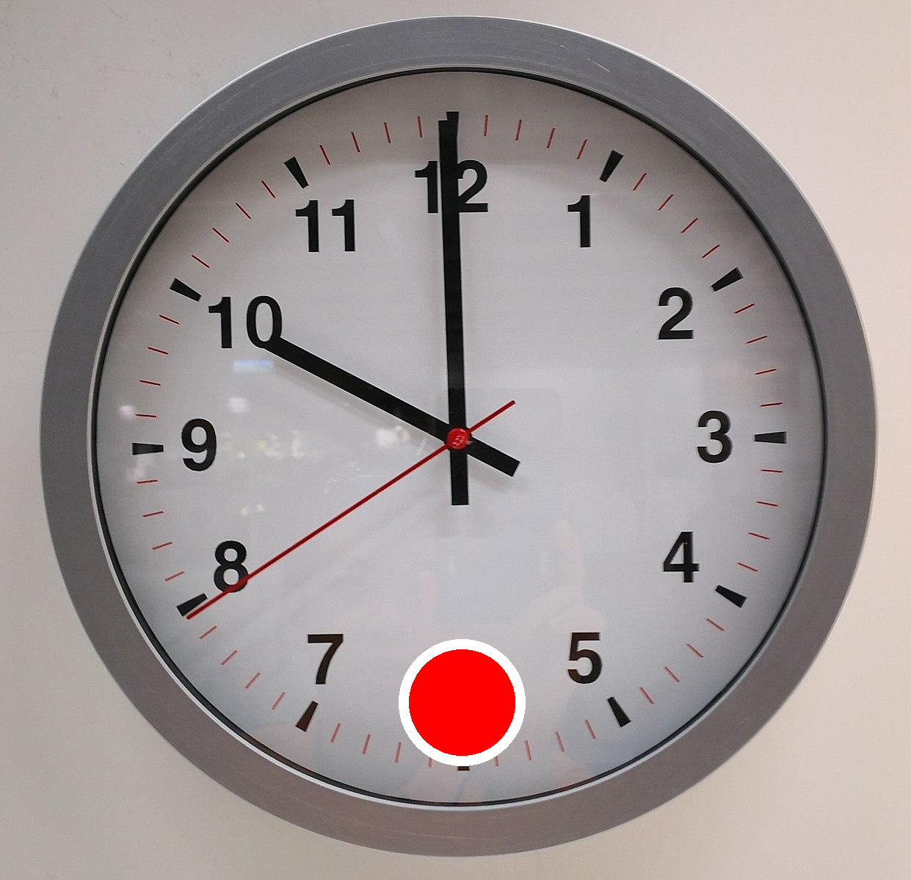
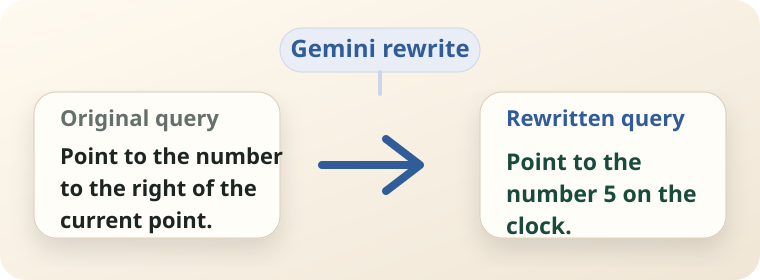
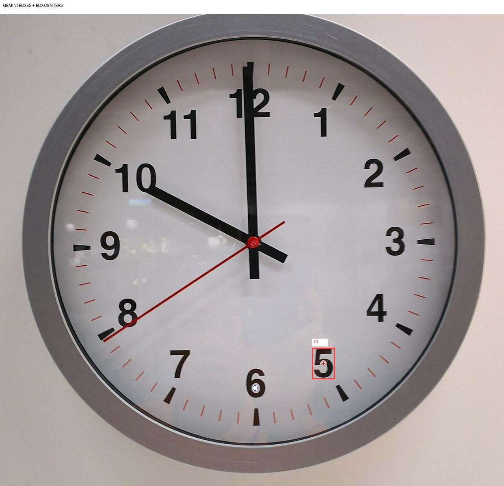
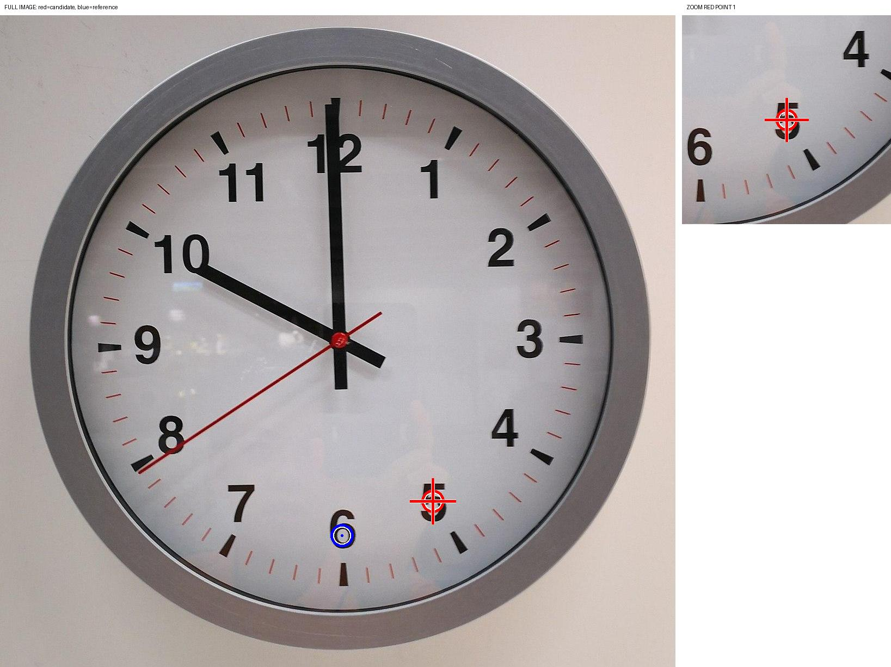
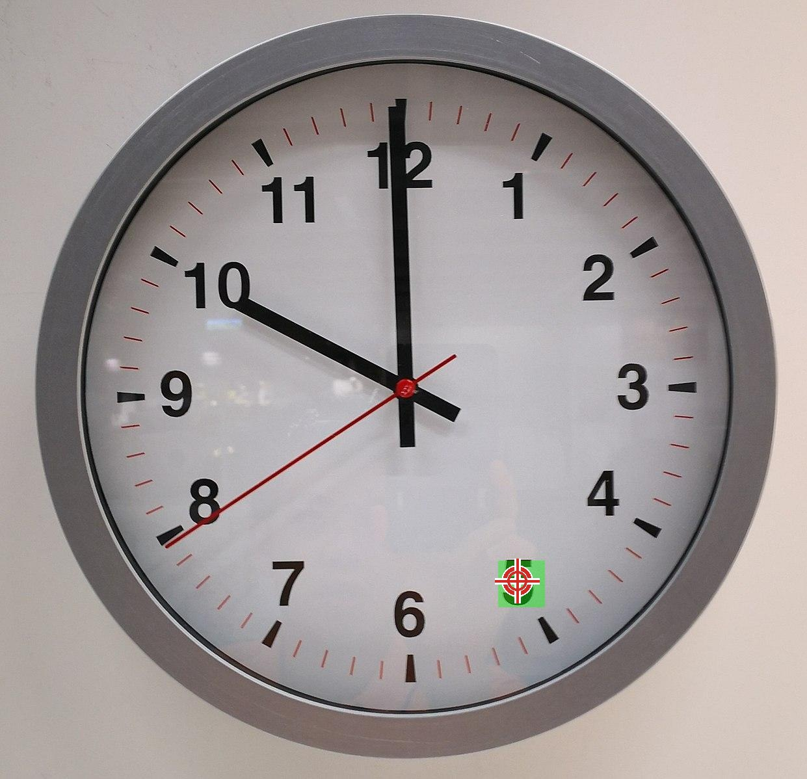

ERA @ CVPR 2026 PointArena Challenge
Point-Agent
A multi-stage visual grounding pipeline that combines Gemini query rewriting, box-level guidance, Molmo2 point prediction, and strict Gemini verification for language-guided pointing.
Overview
From embodied intent to actionable points
PointArena frames pointing as an embodied reasoning problem: an agent must translate language into precise visual targets that can support interaction, navigation, manipulation, or downstream action. The benchmark stresses spatial relations, affordance cues, counting, steerable reference-point queries, and general scene reasoning.
Point-Agent treats each query as a small perception-action grounding task. It rewrites underspecified instructions into scene-grounded targets, localizes candidate regions, predicts points with Molmo2, and verifies whether the selected pixel actually lies on the object, part, free space, or relation that an embodied agent would need to act on.
Method
A verifier-guided embodied pointing pipeline
Point-Agent decomposes each instruction into a query rewrite, visual localization, local point prediction, and conservative verification loop, with cached artifacts at every stage.
1
User query
Image + user query

Load the image, original query, category, and reference-point markers for steerable samples.
2
Rewrite
Gemini query rewrite

Resolve vague embodied intent into a concrete visual target.
3
Box helper
Gemini localization hints

Propose candidate boxes, center hints, and distance cues before point prediction.
4
Point prediction
Molmo2 point predictor

Predict candidate pixel points from original, rewrite, and hints.
5
Verification
Gemini strict judge

Check count, containment, spatial relation, and trigger fallback repair when needed.
6
Final points
Final point set

Save accepted points, cached stage artifacts, and mask-overlay visualizations for scoring.
Results
Evaluation snapshot
The table compares PointAgent (ours) with cited baselines on the PointArena benchmark.
86.05%
PointAgent (ours)
Point-Agent ranked 1st in the PointArena Challenge, with strong affordance, spatial, and reasoning performance across the benchmark categories.
Report comparison
Point-Agent against reported baselines
Baseline values are taken from the cited reports; GPT-5.4 was evaluated by our team. Missing category-level entries are shown with dashes.
| Method | Average | Affordable | Counting | Reasoning | Spatial | Steerable |
|---|---|---|---|---|---|---|
| GPT-5.4 [0] | 56.42% | 71.21% | 47.96% | 47.67% | 61.54% | 53.50% |
| MolmoPoint-8B [1] | 70.70% | 85.90% | 74.50% | 77.20% | 76.90% | 39.00% |
| Seed1.8 [2] | 76.50% | — | — | — | — | — |
| Seed2.0pro [3] | 81.40% | — | — | — | — | — |
| Molmo2-4B [4] | 67.70% | 82.30% | 71.40% | 72.00% | 71.80% | 41.00% |
| Gemini-3-Pro [5] | 85.50% | — | — | — | — | — |
| PointAgent (ours) | 86.05% | 96.97% | 75.00% | 88.60% | 88.21% | 81.50% |
Sources:
[0] GPT-5.4: evaluated by our team
[1] MolmoPoint-8B
[2] Seed1.8 model card
[3] Seed2.0 model card
[4] Molmo2-4B
[5] Gemini 3 Pro Vision
Qualitative Examples
Where the pipeline has to reason
Each example compares the original image with a green ground-truth mask overlay and red predicted point markers across all five benchmark categories. For steerable queries, the blue marker shows the reference point used by the instruction.

Affordance
Original query Point to the object that people use to clean surfaces.
Rewritten query Point to the yellow sponge.

Spatial
Original query Point to the front wheels of the car.
Rewritten query Point to the front wheels of the red bus.

Reasoning
Original query Point to the second car from the right.
Rewritten query Point to the black SUV parked next to the rightmost black sedan.

Counting
Original query Point to all birds.
Rewritten query Point to the two birds perched on the tree branches.

Steerable
Original query Point to the number to the right of the current point on the image.
Rewritten query Point to the number 5 on the clock.
Team Members
Point-Agent team
Submission authors and affiliations.
-
1.
Xiuguang Li Sun Yat-sen University lixg57@mail2.sysu.edu.cn
-
2.
Jiacong Zhou Harbin Institute of Technology jczhou@hdu.edu.cn
-
3.
Jialong Peng Sun Yat-sen University pengjlong3@mail2.sysu.edu.cn
-
4.
Guanying Chen Sun Yat-sen University chenguanying@mail.sysu.edu.cn
-
5.
Jiaxu Miao Sun Yat-sen University miaojx@mail.sysu.edu.cn Harbin Institute of Technology miaojx@hit.edu.cn